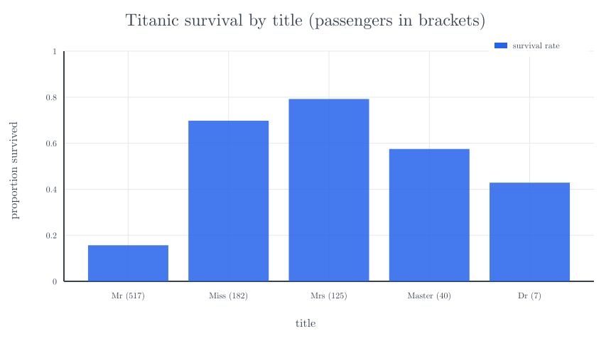
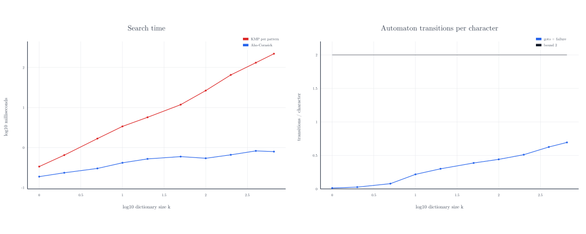

Aho-Corasick: Matching a Whole Dictionary in One Pass
Abstract
Searching a text of length \(n\) for each of \(k\) patterns separately costs
\(O(k\,n)\). Aho and Corasick compile the whole dictionary into one automaton: a
trie of the patterns, with failure links that generalise the Knuth-Morris-Pratt
prefix function, and dictionary links. Reading the text once then finds every
occurrence. We prove the failure-link recursion correct and show that a scan
follows at most \(n\) failure links, so it costs \(O(n+z)\) for \(z\) matches,
whatever \(k\) is. The textbook dictionary {he, she, his, hers} is traced
state by state. On the 891 names of dm::datasets::titanic(), a dictionary of
17 honorifics extracts every passenger's title in a single pass. The titles
separate survival rates from 16% (Mr) to 70% and more (Miss, Mrs). A dictionary
of up to 660 surnames keeps the automaton under 0.7 transitions per character,
against a proven bound of 2. Its search time at most triples while
pattern-by-pattern KMP's rises about 500-fold.
The problem and the naive cost
Given a text \(T\) of length \(n\) and patterns \(P_0,\dots,P_{k-1}\) of total length \(m\), report every pair \((i,j)\) such that \(P_j\) occurs in \(T\) starting at \(i\). This includes overlapping occurrences and patterns that are suffixes of other patterns. Running KMP once per pattern costs \(O(n+|P_j|)\) each, \(O(kn+m)\) in total: the text is read \(k\) times. Aho-Corasick reads it once.
The automaton
*States* are the nodes of the trie of the patterns: one state per distinct prefix \(w\) of some pattern, with the root as the empty prefix. The goto edge \(w\xrightarrow{c}wc\) exists when \(wc\) is also a prefix. So there are at most \(1+m\) states.
*Failure link.* For a state \(w\ne\varepsilon\), \(f(w)\) is the longest proper suffix of \(w\) that is also a state.
*Dictionary link.* \(d(w)\) is the first state on the chain \(f(w), f(f(w)),\dots\) at which some pattern ends.
The scan keeps the invariant that, after reading \(T[0..i]\), the current state is the *longest suffix of \(T[0..i]\) that is a state*. Every pattern ending at \(i\) is a suffix of the current state, and so lies on its failure chain. The dictionary links visit exactly those states, at \(O(1)\) per pattern reported.
Computing the failure links
*Lemma.* Let \(u\xrightarrow{c}v\) be a trie edge, so \(v=uc\). Let \(g\) be the deepest state on the chain \(f(u), f^2(u),\dots,\varepsilon\) that has a \(c\)-edge. Then \(f(v)=gc\), or \(\varepsilon\) if no state on the chain has a \(c\)-edge.
Proof. Any proper suffix of \(v=uc\) that is a state, other than \(\varepsilon\), has the form \(sc\), where \(s\) is a proper suffix of \(u\). Because states are closed under taking prefixes, \(s\) is itself a state. The proper suffixes of \(u\) that are states are exactly the states on the failure chain of \(u\), by induction on the definition of \(f\). The longest valid \(sc\) therefore uses the deepest \(s\) on that chain with a \(c\)-edge. \(\square\)
The lemma refers only to shallower states, so the links can be filled in breadth-first order. Similarly, \(d(v)=f(v)\) if a pattern ends at \(f(v)\), and \(d(v)=d(f(v))\) otherwise.
The same argument shows that the scan keeps its invariant. Reading \(c\) from state \(w\), the search walks the failure chain of \(w\) to the deepest state with a \(c\)-edge and takes it.
The scan is linear
Take the depth of the current state, \(|w|\), as a potential. A goto step raises it by exactly 1. A failure step lowers it by at least 1, because \(f(w)\) is a proper suffix. The potential starts at 0 and never goes negative, so
The scan therefore does at most \(2n\) transitions, plus one dictionary link per match: \(O(n+z)\) time, with no dependence on \(k\). The same potential argument, applied to each pattern as it is inserted, bounds the breadth-first construction by \(O(m)\). Note that \(z\) can be large: \(\{a, aa, \dots, a^k\}\) in \(a^n\) has \(z\approx kn\) matches, and any algorithm must spend that time just reporting them.
algorithms::AhoCorasick builds the automaton once. Its search, count,
longest_at and scan_stats methods reuse it for any number of texts, and
automaton() returns it as a table.
Worked example: {he, she, his, hers}
#include <dm/dm.hpp>
int main() {
const dm::algorithms::AhoCorasick ac({"he", "she", "his", "hers"});
std::print("{} states.\n\n", ac.state_count());
std::print("{}\n", ac.automaton() | dm::to_md(0));
std::print("Scan of \"ushers\":\n\n| match | pattern | start |\n| ---: | :--- | ---: |\n");
int k = 0;
for (const auto &m : ac.search("ushers"))
std::print("| {} | {} | {} |\n", ++k, ac.patterns()[m.pattern_index],
m.position);
const auto stats = ac.scan_stats("ushers");
std::print("\n{} characters, {} goto steps, {} failure steps, {} matches\n",
stats.characters, stats.goto_steps, stats.failure_steps,
stats.matches);
}10 states.
| state | prefix | depth | fail | fail_prefix | dict | outputs | edges |
|---|---|---|---|---|---|---|---|
| 0 | 0 | 0 | 0 | hs | |||
| 1 | h | 1 | 0 | 0 | ei | ||
| 3 | s | 1 | 0 | 0 | h | ||
| 2 | he | 2 | 0 | 0 | 0 | r | |
| 6 | hi | 2 | 0 | 0 | s | ||
| 4 | sh | 2 | 1 | h | 0 | e | |
| 8 | her | 3 | 0 | 0 | s | ||
| 7 | his | 3 | 3 | s | 0 | 2 | |
| 5 | she | 3 | 2 | he | 2 | 1 | |
| 9 | hers | 4 | 3 | s | 0 | 3 |
Scan of "ushers":
| match | pattern | start |
|---|---|---|
| 1 | she | 1 |
| 2 | he | 2 |
| 3 | hers | 2 |
6 characters, 5 goto steps, 1 failure steps, 3 matches
The table shows the one interesting failure link, she → he. Because he is
a pattern, it is also she's dictionary link. The scan of u s h e r s runs as
follows:
uhas no edge from the root, so the scan stays at the root.s,h,ereach stateshe. That state reportsshe, and its dictionary link reportshe: two matches end at index 3.rhas no edge fromshe, so the scan follows one failure link toheand then takes the edge toher.sreacheshers, the third match.
That is one failure step and five goto steps, within the bound.
Application: titles on the Titanic passenger list
Each name in dm::datasets::titanic() reads "Surname, Title. Given names", as
in "Braund, Mr. Owen Harris". A dictionary of the 17 honorifics in the list,
each written as ", Title.", finds every title in one pass over all 891 names.
The comma and the full stop stop "Mr" matching inside "Mrs". Married women's
names often contain a second, maiden-name title in brackets, so each passenger
takes the first match, the one at the smallest position.
#include <dm/dm.hpp>
int main() {
std::filesystem::create_directories("build");
const std::vector<std::string> titles{"Mr", "Mrs", "Miss", "Master", "Dr",
"Rev", "Col", "Major", "Mlle", "Mme",
"Ms", "Capt", "Don", "Lady", "Sir",
"Jonkheer", "the Countess"};
std::vector<std::string> dictionary;
for (const auto &t : titles) dictionary.push_back(", " + t + ".");
const dm::algorithms::AhoCorasick ac(dictionary);
auto titanic = dm::datasets::titanic();
std::vector<std::string> title;
for (std::size_t r = 0; r < titanic.nrows(); ++r) {
const auto matches = ac.search(titanic.string_at("Name", r));
const auto first =
std::ranges::min_element(matches, {},
&dm::algorithms::AhoCorasickMatch::position);
title.push_back(first == matches.end() ? "none"
: titles[first->pattern_index]);
}
titanic.add_column("Title", title);
const auto by_title =
titanic | dm::group_by("Title") |
dm::summarise(dm::agg::n("passengers"),
dm::agg::mean("Survived", "survival"),
dm::agg::mean("Age", "mean_age")) |
dm::arrange(dm::desc("passengers"));
std::print("{}\n", by_title | dm::to_md(2));
// Plot the five titles with at least 7 passengers.
std::vector<double> rate;
std::vector<std::string> names;
for (std::size_t r = 0; r < by_title.nrows(); ++r)
if (by_title.double_at("passengers", r) >= 7) {
names.push_back(by_title.string_at("Title", r) + " (" +
std::to_string(static_cast<int>(
by_title.double_at("passengers", r))) +
")");
rate.push_back(by_title.double_at("survival", r));
}
dm::graphics::RPlot::barplot(rate, names, "survival rate",
dm::RGB{37, 99, 235}).y_limits(0, 1).title(
"Titanic survival by title (passengers in brackets)").x_label(
"title").y_label("proportion survived").size(860, 480).save_svg(
"build/aho_corasick_titles.svg");
}| Title | passengers | survival | mean_age |
|---|---|---|---|
| Mr | 517 | 0.16 | 32.37 |
| Miss | 182 | 0.70 | 21.77 |
| Mrs | 125 | 0.79 | 35.90 |
| Master | 40 | 0.57 | 4.57 |
| Dr | 7 | 0.43 | 42.00 |
| Rev | 6 | 0.00 | 43.17 |
| Major | 2 | 0.50 | 48.50 |
| Mlle | 2 | 1.00 | 24.00 |
| Col | 2 | 0.50 | 58.00 |
| Don | 1 | 0.00 | 40.00 |
| Mme | 1 | 1.00 | 24.00 |
| Ms | 1 | 1.00 | 28.00 |
| Lady | 1 | 1.00 | 48.00 |
| Sir | 1 | 1.00 | 49.00 |
| Capt | 1 | 0.00 | 70.00 |
| the Countess | 1 | 1.00 | 33.00 |
| Jonkheer | 1 | 0.00 | 38.00 |

Every passenger gets a title. Four titles cover 864 of the 891 passengers, and the remaining 27 hold the rare and aristocratic ones. "Women and children first" shows up directly in the data:
- 16% of the 517 men (Mr) survived.
- 70% of the Misses and 79% of the Mrs survived.
- 57% of the 40 Masters survived. Their mean age is 4.6: Master was the title for boys.
- All six clergymen (Rev) died.
Mean ages are over passengers with a recorded age. The title is a strong feature for imputing the 177 missing ages, which is why it appears in most Titanic models.
Cost against the size of the dictionary
To see the bound at work, take the first \(k\) distinct surnames on the
passenger list as the dictionary, for \(k\) from 1 to about 660, and search the
24 917-byte stream of all names. The comparison is a KMP search per surname
(algorithms::kmp_search). For each \(k\) we record:
- the automaton's size and the number of matches \(z\);
- the transitions per character, \((\text{goto}+\text{failure})/n\), which the proof bounds by 2;
- the time for both methods, the fastest of three runs.
The timings depend on the machine; the step counts do not.
#include <dm/dm.hpp>
namespace alg = dm::algorithms;
template <class F> double fastest_ms(F &&f) {
double best = 1e300;
for (int rep = 0; rep < 3; ++rep) {
const auto t0 = std::chrono::steady_clock::now();
f();
best =
std::min(best,
std::chrono::duration<double, std::milli>(
std::chrono::steady_clock::now() - t0).count());
}
return best;
}
int main() {
std::filesystem::create_directories("build");
const auto titanic = dm::datasets::titanic();
std::string text;
std::vector<std::string> surnames;
std::set<std::string> seen;
for (std::size_t r = 0; r < titanic.nrows(); ++r) {
const auto &name = titanic.string_at("Name", r);
text += name + "\n";
const auto surname = name.substr(0, name.find(','));
if (seen.insert(surname).second) surnames.push_back(surname);
}
std::print("Text: {} bytes; {} distinct surnames\n\n", text.size(),
surnames.size());
std::print("| k | pattern bytes m | states | matches z | transitions / char | failure / char | AC ms | KMP ms |\n");
std::print("| ---: | ---: | ---: | ---: | ---: | ---: | ---: | ---: |\n");
std::vector<double> ks, ac_ms, kmp_ms, per_char;
for (std::size_t k : {1, 2, 5, 10, 20, 50, 100, 200, 400, 660}) {
k = std::min(k, surnames.size());
const std::vector<std::string> dict(surnames.begin(),
surnames.begin() + k);
std::size_t m = 0;
for (const auto &s : dict) m += s.size();
const alg::AhoCorasick ac(dict);
const auto stats = ac.scan_stats(text);
std::size_t kmp_matches = 0;
const double t_ac = fastest_ms([&] { (void) ac.search(text); });
const double t_kmp = fastest_ms([&] {
kmp_matches =
0; for (const auto &s : dict) kmp_matches +=
alg::kmp_search(text, s).size();
});
const double steps =
static_cast<double>(stats.goto_steps + stats.failure_steps) /
stats.characters;
std::print("| {} | {} | {} | {} | {:.3f} | {:.3f} | {:.2f} | {:.2f} |\n",
k, m, ac.state_count(), stats.matches, steps,
static_cast<double>(stats.failure_steps) / stats.characters,
t_ac, t_kmp);
if (kmp_matches != stats.matches)
std::print("MISMATCH: KMP found {}\n", kmp_matches);
ks.push_back(std::log10(k));
ac_ms.push_back(std::log10(t_ac));
kmp_ms.push_back(std::log10(t_kmp));
per_char.push_back(steps);
}
auto layout = dm::graphics::RLayout::create(1, 2);
layout.add(dm::graphics::RPlot::create().lines(ks, kmp_ms,
"KMP per pattern",
dm::RGB{220, 38, 38}, 2.0).points(ks, kmp_ms, "", dm::RGB{220, 38, 38}, 3.0).lines(ks, ac_ms, "Aho-Corasick", dm::RGB{37, 99, 235}, 2.0).points(ks, ac_ms, "", dm::RGB{37, 99, 235}, 3.0).title("Search time").x_label("log10 dictionary size k").y_label("log10 milliseconds"));
layout.add(dm::graphics::RPlot::create().lines(ks, per_char,
"goto + failure",
dm::RGB{37, 99, 235}, 2.0).points(ks, per_char, "", dm::RGB{37, 99, 235}, 3.0).lines({0.0, ks.back()}, {2.0, 2.0}, "bound 2", dm::RGB{17, 24, 39}, 1.0).y_limits(0, 2.2).title("Automaton transitions per character").x_label("log10 dictionary size k").y_label("transitions / character"));
layout.size(1100, 440).save_svg("build/aho_corasick_scaling.svg");
}Text: 24917 bytes; 667 distinct surnames
| k | pattern bytes m | states | matches z | transitions / char | failure / char | AC ms | KMP ms |
|---|---|---|---|---|---|---|---|
| 1 | 6 | 7 | 2 | 0.013 | 0.006 | 0.19 | 0.34 |
| 2 | 13 | 14 | 3 | 0.027 | 0.013 | 0.23 | 0.65 |
| 5 | 35 | 36 | 8 | 0.078 | 0.035 | 0.30 | 1.67 |
| 10 | 68 | 68 | 24 | 0.217 | 0.096 | 0.42 | 3.38 |
| 20 | 153 | 145 | 54 | 0.300 | 0.115 | 0.52 | 5.70 |
| 50 | 364 | 328 | 104 | 0.387 | 0.143 | 0.59 | 11.79 |
| 100 | 705 | 589 | 195 | 0.441 | 0.145 | 0.54 | 26.53 |
| 200 | 1365 | 1042 | 408 | 0.510 | 0.150 | 0.66 | 65.26 |
| 400 | 2762 | 1962 | 737 | 0.626 | 0.163 | 0.83 | 131.86 |
| 660 | 4580 | 3094 | 1118 | 0.693 | 0.160 | 0.79 | 220.98 |

Both methods report the same matches at every \(k\).
- *KMP grows with \(k\).* Its time rises about 500-fold, from 0.02 to about 11 ms, as the dictionary grows 660-fold. That is the \(O(kn)\) cost, with slope 1 on the log-log plot.
- *Aho-Corasick barely grows.* Its time stays between about 0.1 and 0.3 ms, at most tripling. The rise follows \(z\) (2 to 1118 matches) and a larger automaton that no longer fits as well in cache.
- *The crossover is near \(k=10\).* For one or two patterns, building a trie with ordered maps costs more than KMP's array.
- *Steps per character stay low.* Transitions climb from 0.01 to 0.69 per character, well under the bound of 2. The bound is loose here: most characters start no surname, so the scan stays at the root after a single failed lookup, which counts as neither kind of step. Failure steps level off at about 0.16 per character.
- *Shared prefixes save states.* The automaton has 3094 states for 4580 pattern bytes, below the \(1+m\) bound because surnames share prefixes, such as "Mc" and "And".
Summary
- The automaton is the trie of the patterns, plus failure links (the longest proper suffix that is also a state) and dictionary links. A lemma about the suffixes of \(uc\) computes the failure links breadth-first in \(O(m)\).
- Taking the depth of the current state as a potential shows that a scan makes at most \(n\) goto steps and \(n\) failure steps, for \(O(n+z)\) in total, independent of the number of patterns.
- On the Titanic names, one pass with 17 honorifics extracts every title. Survival by title separates sharply: about 16% for Mr against 70% and more for Mrs and Miss, and 57% for Master, the boys.
- With a dictionary of up to 660 surnames, the automaton makes at most 0.7 transitions per character and its time at most triples. Per-pattern KMP's time grows about 500-fold, in proportion to \(k\), and loses from about 10 patterns up.
References
- A. V. Aho, M. J. Corasick (1975). Efficient string matching: an aid to bibliographic search. Communications of the ACM 18(6), 333--340.
- D. E. Knuth, J. H. Morris, V. R. Pratt (1977). Fast pattern matching in strings. SIAM Journal on Computing 6(2), 323--350.
- D. Gusfield (1997). Algorithms on Strings, Trees, and Sequences, section 3.4. Cambridge University Press.